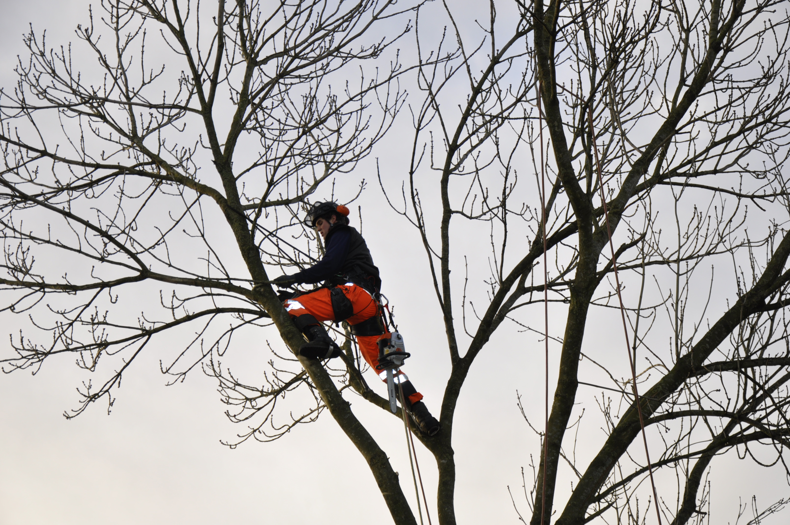

Wij stellen u graag voor aan onze hoveniers
Bedrijfsvoering, Ontwerp, Aanleg, Onderhoud
Onderhoud, Begeleiding, Bloemwerk

Aanleg, Onderhoud en European Tree Worker (ETW)
Schoenmakers Tuinen is een erkend leerwerkbedrijf. Wij investeren in de toekomst van het hoveniersvak door het opleiden van nieuwe vakmensen.